1.
acclimatize: Tom is very healthy, which is why he can acclimatize to all kinds of weather.
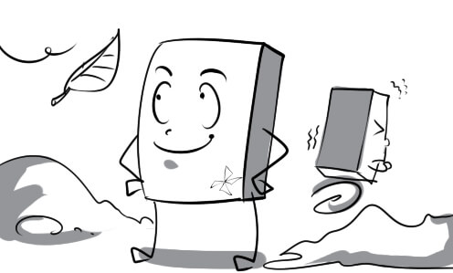
2.
asteroid: Asteroid is a minor planet that moves around the sun.
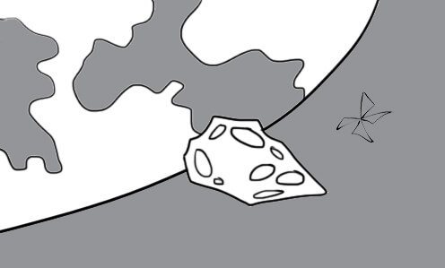
3.
astronaut: Neil Armstrong was the first American astronaut to set foot on the moon in 1969.

4.
colonize: India was colonized by the British in the eighteenth century.

5.
cosmos: There are plenty of planets in the cosmos besides Earth.

6.
crater: This crater is the result of a meteorite crash in 1980.

7.
debris: There are loads of debris floating around our planet.

8.
exploration: The exploration of Mars has been carried out only by robots.

9.
inevitable: A catastrophic space shuttle accident seems almost inevitable.

10.
lunar: The lunar gravity is very weak, so the astronauts can jump very high on the moon.

11.
meteor: Many people believe that if we made a wish when a meteor passes by, that wish would come true.
12.
orbit: The Earth is in an elliptical orbit around the Sun.
13.
propel: There are two massive rocket boosters strapped to the space shuttle to propel it forward.
14.
simulator: This driving simulator is very useful to people who want to learn to drive.
15.
sustain: There is a theory that Mars can sustain life.

16.
terrestrial: The aliens are really surprised at how developed the terrestrial life is.
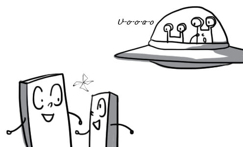
17.
toxic: Three astronauts were killed by a leak of toxic gas yesterday.

18.
undergo: My father is undergoing a delicate heart surgery.
19.
uninhabitable: This desert is totally uninhabitable because it has no water at all.
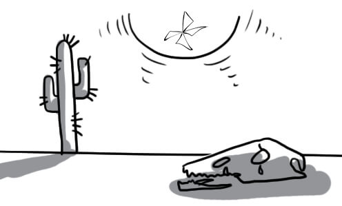
20.
universal: Robots will become universal in the future and they can help us doing household chores.

21.
unmanned: The US used unmanned aircrafts to spy on their enemy.

22.
weightlessness: The astronauts are used to the weightlessness of space.

23.
computerisation: Computerisation makes the work faster and more accurate.
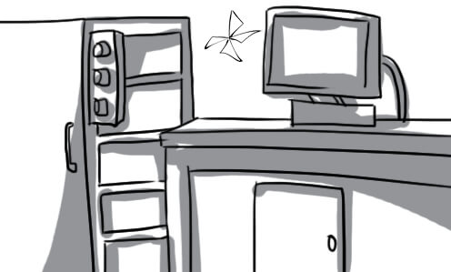
24.
envisage: It is envisaged that the share price will increase soon.

25.
labour-saving: Thanks to labour-saving devices, we can do our work very easily.

26.
patent: The scientist was granted a patent on his new invention.
27.
prototype: The prototype of modern bicycle had wooden wheels.

28.
revolutionize: Smartphone has revolutionized the people's communications.
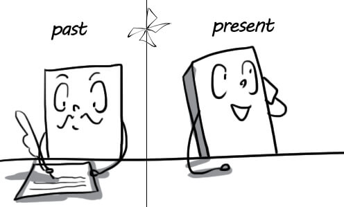
29.
speculate: This finance software will help us speculate on the business income.

30.
state-of-the-art: This state-of-the-art computer costs me nearly 5,000 dollars.
31.
surpass: With many improvements, the new MacBook has surpassed all other laptops.
32.
atmosphere: The atmosphere is a layer of gases surrounding the Earth.

33.
commercial: Commercial flights from Earth to Mars may be available within 30-years.
34.
Earth: A globe is a three-dimensional scale model of Earth.
35.
extreme: We can never approach the sun because of its extreme heat.
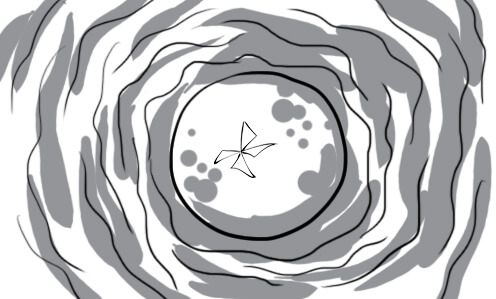
36.
float: Astronauts float around in space because there is no gravity in space.
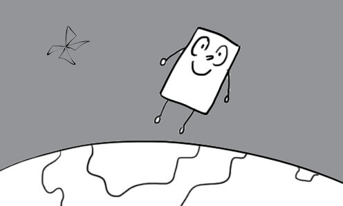
37.
galaxy: The Milky Way is the galaxy of the Earth and the solar system.
38.
gas: Carbon dioxide is one of the most abundant greenhouse gases in the earth's atmosphere.
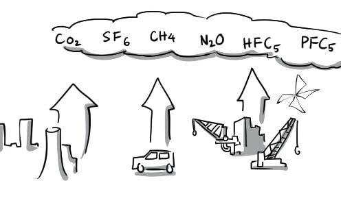
39.
gravity: Gravity pulls everything towards the center of the Earth.
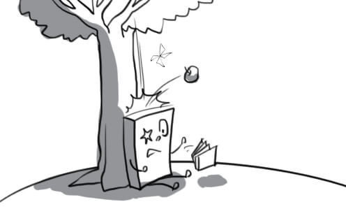
40.
horizon: It's a spectacular sight as the sun sinks below the horizon.

41.
launch: The space shuttle launch requires the speed of over 27,000 km/h in 8.5 minutes.

42.
moon: The moon is the Earth's nearest neighbor.

43.
ocean: Pacific ocean is the biggest ocean on Earth.

44.
outer space: Telescope has contributed a lot in exploring the outer space.

45.
planet: Saturn is the second biggest planet in the solar system.
46.
radiation: People with high levels of exposure to ultraviolet radiation are at greater risk of skin cancer.

47.
rocket: Russian is now successful in launching a space rocket.
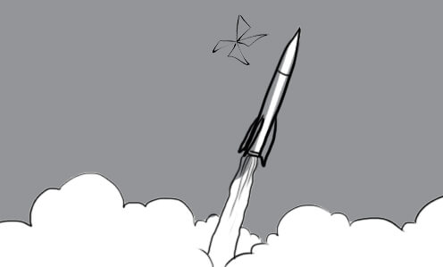
48.
rotate: It takes 24 hours for the Earth to rotate around its own axis once.
49.
satellite: Vinasat-1 is the first Vietnamese satellite.
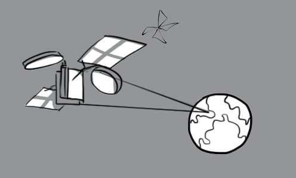
50.
solar: In 2009, Germany was the world leader in using solar energy.

51.
solar system: The solar system consists of the sun and eight planets

52.
space: The astronaut spotted a UFO traveling in space.

53.
space shuttle: You can travel to outer space on a space shuttle.

54.
space station: Space station provides a wonderful condition for researching biology, physics, meteorology...

55.
spacecraft: The spacecraft landed successfully on Mars.
56.
surface: The surface of Mars is really rough and full of craters.
57.
access: He accesses the internet to chat with his girlfriend.
58.
antivirus: This antivirus software can protect your computer from many kinds of viruses.

59.
automatically: The manufacturing system of this factory is operated automatically.

60.
compact: Compact discs are used to store digital data.
61.
connection: Thanks to the Internet connection, people around the world can share information with each other.

62.
data: Daniel stores his data in folders according to their types.

63.
dated: His way to start a fire is so dated. We can do it very easily with a lighter.

64.
device: Modern devices such as mobile phones, tablets… enable people to communicate more effectively.

65.
digital: I always use this digital camera to take pictures of my friends.

66.
display: The lyrics are displayed at the bottom of the screen.

67.
download: Nowadays, we can download music, movies and software from the Internet very easily.
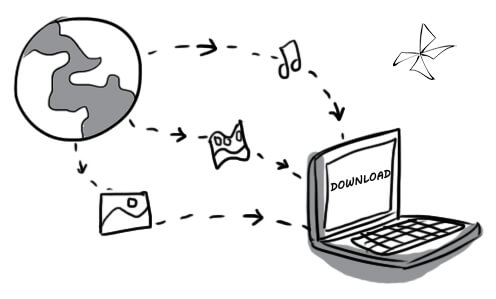
68.
function: My function in the company is data input.

69.
gadget: This mini speaker is a perfect gadget for smartphones.
70.
keyboard: Apple keyboard design brings a lot of convenience for typing.
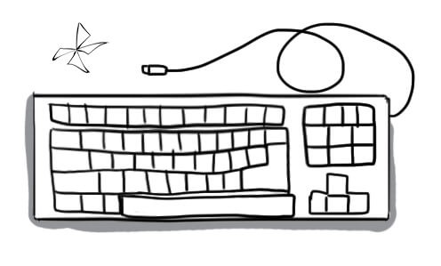
71.
keypad: Blackberry keypad is similar to the keyboard on a computer.

72.
laptop: David uses his personal laptop for work everyday.
73.
memory: My laptop has two gigabytes of memory.

74.
monitor: Peter converted his old television set into a computer monitor.
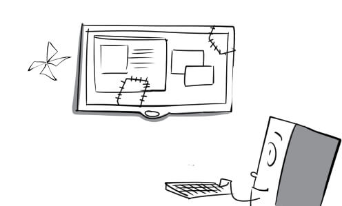
75.
mouse: I cannot use my computer without a mouse.

76.
operate: The train operates punctually thanks to the advanced train control system.

77.
operating system: Windows is one of the most popular operating system in the world.

78.
portable: My son plays video games on his portable game console all day.

79.
program: Microsoft Word is a very useful word processing program.

80.
remote control: We can change the TV channels from far away with a remote control.

81.
scroll: I am scrolling down to the bottom of the document.
82.
silicon chip: The silicon chip is one of the greatest achievements in micro-technology.

83.
store: Storing data wisely can reduce searching time.

84.
technology: My office is well equipped with modern technologies.
85.
telecommunications: Thanks to telecommunications, people can communicate with each other anywhere at any time.
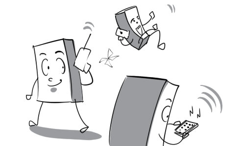
86.
up-to-date: I keep my computer up-to-date with the latest Windows updates.
87.
user-friendly: This tablet is so user-friendly that even a 3-year-old baby can use it.

88.
virtual: My university has built the virtual library. Students can read books without going to the campus.

89.
vision: Cats have a very good night vision.

90.
wireless connection: Wireless connection is available in every university in Ho Chi Minh city.